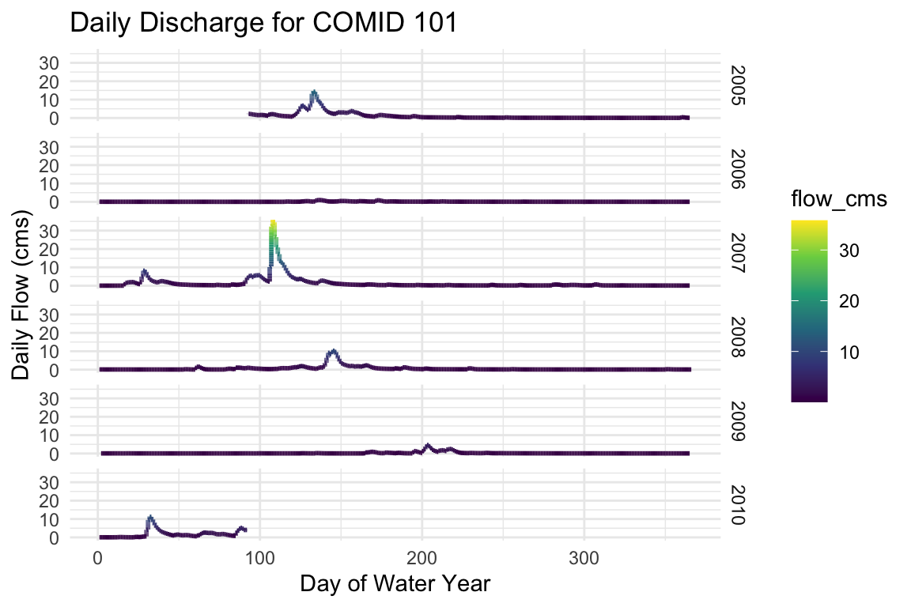
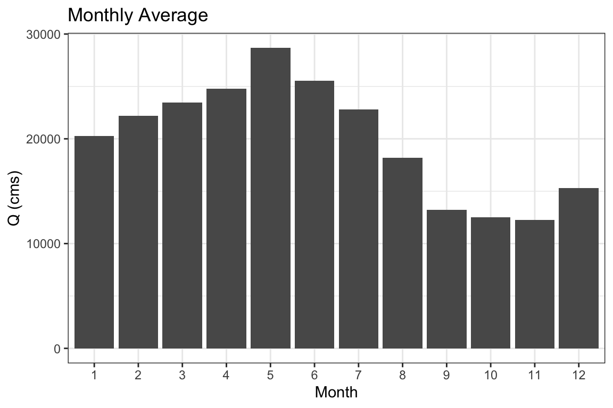
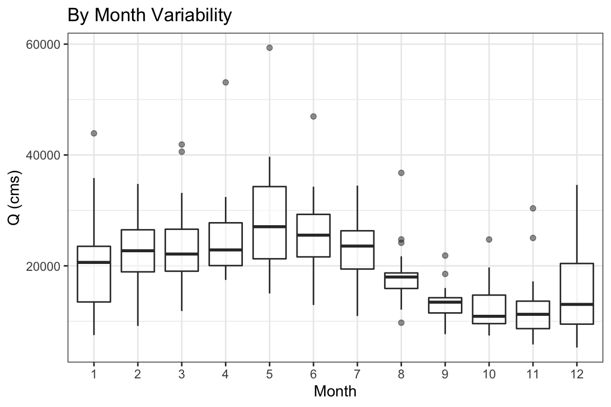
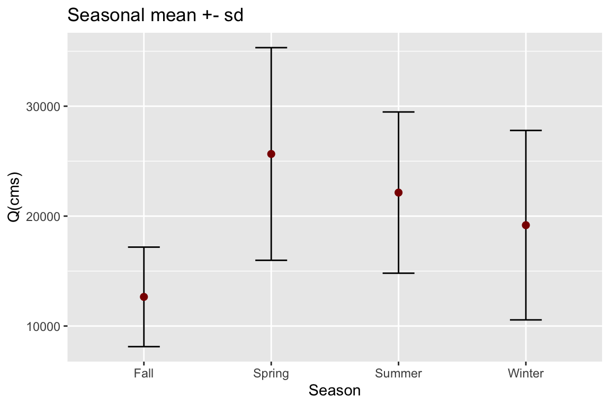
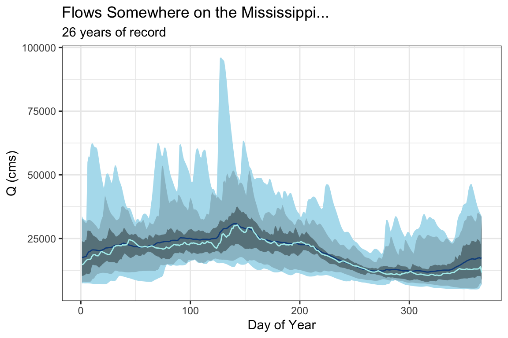

Raw historic data comes in hourly time intervals. For many analyses, different time aggregates are needed (e.g. by year, by-month …). To ease repetative tasks, the nwmTools provides a split_time function and a family of aggregate_* functions.
split_time in breaks the hourly dateTime into base temporal units. In addition to the basic year, month, day, and hour, the season, water year, and Day-of-Water Year (DOWY) are added:
# Get 5-years of data and split the time attribute
st = readNWMdata(comid = 101,
startDate = "2005-01-01",
endDate = "2009-12-31") %>%
split_time("dateTime")
glimpse(st)
#> Rows: 43,801
#> Columns: 13
#> $ model <chr> "NWM2", "NWM2", "NWM2", "NWM2", "NWM2", "NWM2", "NWM2", "NWM2…
#> $ comid <dbl> 101, 101, 101, 101, 101, 101, 101, 101, 101, 101, 101, 101, 1…
#> $ dateTime <dttm> 2005-01-01 00:00:00, 2005-01-01 01:00:00, 2005-01-01 02:00:0…
#> $ flow_cms <dbl> 2.33, 2.32, 2.31, 2.31, 2.30, 2.29, 2.29, 2.28, 2.28, 2.27, 2…
#> $ time <dttm> 2005-01-01 00:00:00, 2005-01-01 01:00:00, 2005-01-01 02:00:0…
#> $ year <dbl> 2005, 2005, 2005, 2005, 2005, 2005, 2005, 2005, 2005, 2005, 2…
#> $ month <dbl> 1, 1, 1, 1, 1, 1, 1, 1, 1, 1, 1, 1, 1, 1, 1, 1, 1, 1, 1, 1, 1…
#> $ day <int> 1, 1, 1, 1, 1, 1, 1, 1, 1, 1, 1, 1, 1, 1, 1, 1, 1, 1, 1, 1, 1…
#> $ hour <int> 0, 1, 2, 3, 4, 5, 6, 7, 8, 9, 10, 11, 12, 13, 14, 15, 16, 17,…
#> $ season <chr> "Winter", "Winter", "Winter", "Winter", "Winter", "Winter", "…
#> $ wy <dbl> 2005, 2005, 2005, 2005, 2005, 2005, 2005, 2005, 2005, 2005, 2…
#> $ julian <dbl> 1, 1, 1, 1, 1, 1, 1, 1, 1, 1, 1, 1, 1, 1, 1, 1, 1, 1, 1, 1, 1…
#> $ DOWY <dbl> 93, 93, 93, 93, 93, 93, 93, 93, 93, 93, 93, 93, 93, 93, 93, 9…Using the split time attributes, we can plot the hourly flow records by julien day, grouped by water-year:
ggplot(data = st, aes(x = DOWY, y = flow_cms, color = flow_cms)) +
geom_line(size = 1) +
facet_grid(wy~.) +
labs(y= "Daily Flow (cms)", x= "Day of Water Year",
title="Daily Discharge for COMID 101") +
scale_color_viridis_c() +
theme_minimal()
Often you might want to split and summarize your data, for example “average monthly flow” or “median annual flow”.
For these tasks, a family of aggregation methods allow users to define an temporal unit via the function name, and pass summarizing function(s) as parameters. Function names follow the pattern of aggregate_* where * represents the common date (and hydro-specific) symbols seen below.
| Symbol | Aggregate |
|---|---|
| y | year |
| m | month |
| d | day of moth |
| doy | day of year |
| j | Julian day |
| s | season |
| wy | water year |
| dowy | day of water year |
These symbols can be combined to provide useful, common aggregation patterns, 14 of these are included the package (some are shown below):
| Aggregate Unit Symbol | Description |
|---|---|
| *_record | Entire Record |
| *_y | Year |
| *_m | Month |
| *_j | Julian Day |
| *_s | season |
| *_wy | Water Year |
| *_ym | Year and Month |
| *_yj | Year and Julian day |
| *_ymd | Day of the Year |
| *_ys | Year and Season |
| *_wym | Water Year and Month |
| *_wymd | Julian Day of the Water Year |
| *_wys | Water Year and Season |
| *_dowy | Day of Water Year |
First lets grab some data for a COMID near Baton Rouge, LA along the Mississippi.
flows = readNWMdata(comid = 19085515)
glimpse(flows)
#> Rows: 227,881
#> Columns: 4
#> $ model <chr> "NWM2", "NWM2", "NWM2", "NWM2", "NWM2", "NWM2", "NWM2", "NWM2…
#> $ comid <dbl> 19085515, 19085515, 19085515, 19085515, 19085515, 19085515, 1…
#> $ dateTime <dttm> 1993-01-01 00:00:00, 1993-01-01 01:00:00, 1993-01-01 02:00:0…
#> $ flow_cms <dbl> 27335.44, 27320.51, 27305.99, 27291.85, 27278.10, 27264.71, 2…Using the flow data grabbed above, we might be interested in seeing the monthly mean flow rates. We can do this by passing the flow records to aggregate_m (m = month) and using mean as the function:
# Aggregate hourly flows to monthly averages by year
monthly = aggregate_m(flows, fun = mean)
glimpse(monthly)
#> Rows: 12
#> Columns: 5
#> $ model <chr> "NWM2", "NWM2", "NWM2", "NWM2", "NWM2", "NWM2", "NWM2", "NWM2…
#> $ comid <dbl> 19085515, 19085515, 19085515, 19085515, 19085515, 19085515, 1…
#> $ month <dbl> 1, 2, 3, 4, 5, 6, 7, 8, 9, 10, 11, 12
#> $ flow_cms <dbl> 20275.04, 22214.57, 23452.17, 24805.57, 28678.87, 25531.56, 2…
#> $ obs <dbl> 19343, 17616, 19344, 18720, 19344, 18720, 19343, 19344, 18720…
ggplot(data = monthly) +
geom_col(aes(x = factor(month), y = flow_cms)) +
labs(x = "Month", y = "Q (cms)",
title = 'Monthly Average') +
theme_bw()
Alternatively we might be interested in the monthly variability in each year. We can do this by passing the flow records to aggregate_ym (ym = year,month) and using mean as the summarizing function:
# Aggregate hourly flows to monthly averages by year
ym = aggregate_ym(flows, fun = mean)
glimpse(ym)
#> Rows: 312
#> Columns: 7
#> $ model <chr> "NWM2", "NWM2", "NWM2", "NWM2", "NWM2", "NWM2", "NWM2", "NWM2…
#> $ comid <dbl> 19085515, 19085515, 19085515, 19085515, 19085515, 19085515, 1…
#> $ year <dbl> 1993, 1993, 1993, 1993, 1993, 1993, 1993, 1993, 1993, 1993, 1…
#> $ month <dbl> 1, 2, 3, 4, 5, 6, 7, 8, 9, 10, 11, 12, 1, 2, 3, 4, 5, 6, 7, 8…
#> $ flow_cms <dbl> 29350.660, 26537.411, 22291.680, 27765.015, 34933.280, 25911.…
#> $ obs <dbl> 744, 672, 744, 720, 744, 720, 744, 744, 720, 744, 720, 744, 7…
#> $ ym <date> 1993-01-01, 1993-02-01, 1993-03-01, 1993-04-01, 1993-05-01, …
ggplot(data = ym, aes(x = factor(month), y = flow_cms)) +
geom_boxplot(alpha = .5) +
labs(x = "Month", y = "Q (cms)",
title = 'By Month Variability') +
theme_bw()
So far we have only looked at passing mean to aggregate_* but multiple functions can also be passed as a vector. The following returns the seasonal (s) mean and standard deviation.
# Aggregate by season
seasons = aggregate_s(flows, fun = c('mean', 'sd'))
glimpse(seasons)
#> Rows: 4
#> Columns: 7
#> $ model <chr> "NWM2", "NWM2", "NWM2", "NWM2"
#> $ comid <dbl> 19085515, 19085515, 19085515, 19085515
#> $ season <chr> "Fall", "Spring", "Summer", "Winter"
#> $ flow_cms_mean <dbl> 12652.10, 25654.67, 22141.00, 19176.65
#> $ obs_mean <dbl> 56784, 57408, 57407, 56280
#> $ flow_cms_sd <dbl> 4528.132, 9673.312, 7334.926, 8617.399
#> $ obs_sd <dbl> 0, 0, 0, 0
ggplot(data = seasons, aes(x = season, y = flow_cms_mean)) +
geom_errorbar(aes(ymin=flow_cms_mean - flow_cms_sd, ymax=flow_cms_mean + flow_cms_sd, width = .25)) +
geom_point(color = "darkred", size = 2) +
labs(x = "Season", y = "Q(cms)",
title = "Seasonal mean +- sd")
Equally important, you are not limited to base R functions. Instead you can pass any function to fun that works over a vector of streamflow elements. In the code below we ask for a number of percentiles along with some other summary statistics for every junlien day of the year:
# Aggregate by Julien Day
jul = aggregate_j(flows, fun = c(
n05 = function(x){quantile(x,.05)},
n25 = function(x){quantile(x,.25)},
n75 = function(x){quantile(x,.75)},
n95 = function(x){quantile(x,.95)},
median = median,
mean = mean,
min = min,
max = max))
glimpse(jul)
#> Rows: 366
#> Columns: 20
#> $ model <chr> "NWM2", "NWM2", "NWM2", "NWM2", "NWM2", "NWM2", "NWM2"…
#> $ comid <dbl> 19085515, 19085515, 19085515, 19085515, 19085515, 1908…
#> $ julian <dbl> 1, 2, 3, 4, 5, 6, 7, 8, 9, 10, 11, 12, 13, 14, 15, 16,…
#> $ flow_cms_n05 <dbl> 7631.625, 8005.638, 8059.992, 7951.953, 7929.572, 7936…
#> $ obs_n05 <dbl> 624, 624, 624, 624, 624, 624, 624, 624, 624, 624, 624,…
#> $ flow_cms_n25 <dbl> 10322.62, 10394.12, 10540.41, 10816.02, 11249.80, 1116…
#> $ obs_n25 <dbl> 624, 624, 624, 624, 624, 624, 624, 624, 624, 624, 624,…
#> $ flow_cms_n75 <dbl> 24040.88, 23643.24, 23542.14, 24324.47, 24352.51, 2809…
#> $ obs_n75 <dbl> 624, 624, 624, 624, 624, 624, 624, 624, 624, 624, 624,…
#> $ flow_cms_n95 <dbl> 32752.35, 32324.36, 31808.71, 31297.73, 31009.00, 3205…
#> $ obs_n95 <dbl> 624, 624, 624, 624, 624, 624, 624, 624, 624, 624, 624,…
#> $ flow_cms_median <dbl> 14734.71, 14898.03, 15396.96, 15921.29, 16373.73, 1677…
#> $ obs_median <dbl> 624, 624, 624, 624, 624, 624, 624, 624, 624, 624, 624,…
#> $ flow_cms_mean <dbl> 17573.28, 17610.27, 17747.06, 17873.92, 18055.09, 1900…
#> $ obs_mean <dbl> 624, 624, 624, 624, 624, 624, 624, 624, 624, 624, 624,…
#> $ flow_cms_min <dbl> 7343.35, 7465.78, 7392.34, 7380.63, 7381.53, 7410.34, …
#> $ obs_min <int> 624, 624, 624, 624, 624, 624, 624, 624, 624, 624, 624,…
#> $ flow_cms_max <dbl> 33746.12, 32880.57, 32411.26, 32171.81, 31873.60, 5495…
#> $ obs_max <int> 624, 624, 624, 624, 624, 624, 624, 624, 624, 624, 624,…
#> $ j <chr> "1", "2", "3", "4", "5", "6", "7", "8", "9", "10", "11…
ggplot(data = jul, aes(x = julian)) +
geom_ribbon(aes(ymin=flow_cms_min, ymax=flow_cms_max), fill="#B2DFEE") +
geom_ribbon(aes(ymin=flow_cms_n05, ymax=flow_cms_n95), fill="#9AC0CD") +
geom_ribbon(aes(ymin=flow_cms_n25, ymax=flow_cms_n75), fill="#68838B") +
geom_line(aes(y = flow_cms_mean), col = "#104E8B" ) +
geom_line(aes(y = flow_cms_median), col = "#AFEEEE") +
theme_bw() +
labs(x = "Day of Year", y = "Q (cms)",
title = "Flows Somewhere on the Mississippi...",
subtitle = "26 years of record")